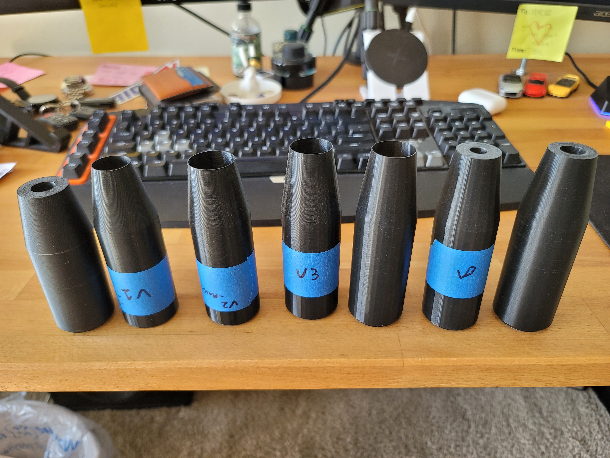
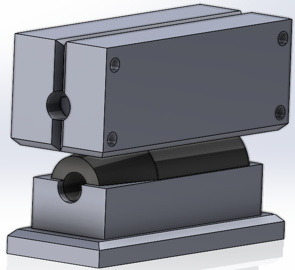

Gaggiuino and Topology Optimization

I've always seen forged carbon parts and enjoyed how they looked. I then stumbled upon an EasyComposites video showing how you can use a 3D-printed mold to make forged carbon fiber parts and I knew I had to make something. Once I got my car I thought this would be the perfect project to learn how to fabricate forged carbon fiber parts.
To begin the process I have to have a 3d model of what I want to make, to then make a mold around it. So, I had to design the shift knob I wanted. I knew I wanted the cylindrical style, so I started with a very basic design. I used very rough dimensions from my holding different poles to get the overall shape, and then I added a chamfer to the top and a slight taper on the bottom. Once I got that design done, I then printed out a model, using vase mode to reduce the amount of filament used, to get an overall idea of how it would feel. I then found out I go it too short, so I adjusted that dimension. I then went with this process two more times until I settled on a shape. Once the overall geometry was decided I then printed out one with the normal print settings, not hollow, to make sure the bottom hole was the correct dimension and to confirm that it was the correct design. A lineup of all the versions can be seen below.
Once I finished the design of the shift knob I just used the geometry as the negative of the mold. From there I had a block with a negative of the shift knob, which isn't that useful. So, to begin with, I decided to split the mold into three pieces, I chose this because it allows for easier removal of the part and a forged carbon fiber part needs a plunger. The plunger of the mold is needed as forged carbon fiber parts take their shape by the pressure of pressing the resin and chopped fibers together. From there I needed a method to keep the mold parts parallel to each other so I added holes in the corners to allow for long bolts to clamp the mold. Lastly, I added a chamfer to the parting lines of the mold to aid in the removal of the part.
When I felt like the design of the mold was finished I printed them out using PTEG and 90% infill, I did this because I needed the part to be very strong to withstand the high clamping forces that will be applied to it. I then just followed the processes laid out in the EasyComposites video. Since I designed the part in SolidWorks getting the volume of the part was easy, and that is needed because that's how one knows how much carbon fiber to resin is needed. I used a bolt that I found that matched the diameter of the large hole on the bottom as a placeholder to minimize the amount of post-processing needed.
When the part was done curing, it looked like the below picture. As you can see there is a lot of post-processing needed. To clean it up I used the learning factory to sand down the flashing and make the part smooth. I also made the hold on the bottom to the correct diameter, using the drill press. I then needed to make a treaded insert so the shift knob can screw into the car. To do this I used an aluminum stock and the lathe. When that was done I then used some JB-weld to adhere it to the inside of the shift knob.

Gaggiuino and Topology Optimization

Refitting the IVSG Mapping Van
Forged Carbon Fiber Shift Knob
Serious collaboration or work inquiries only.